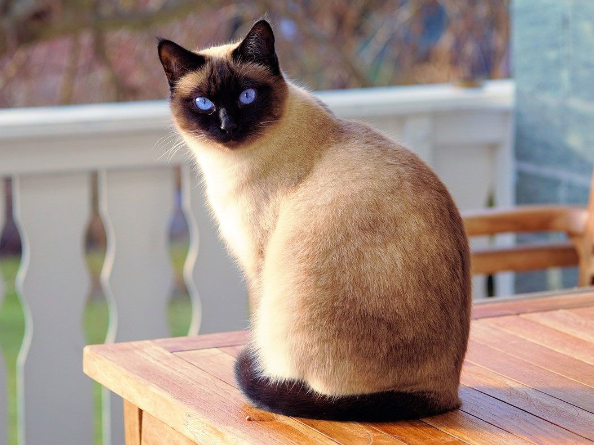
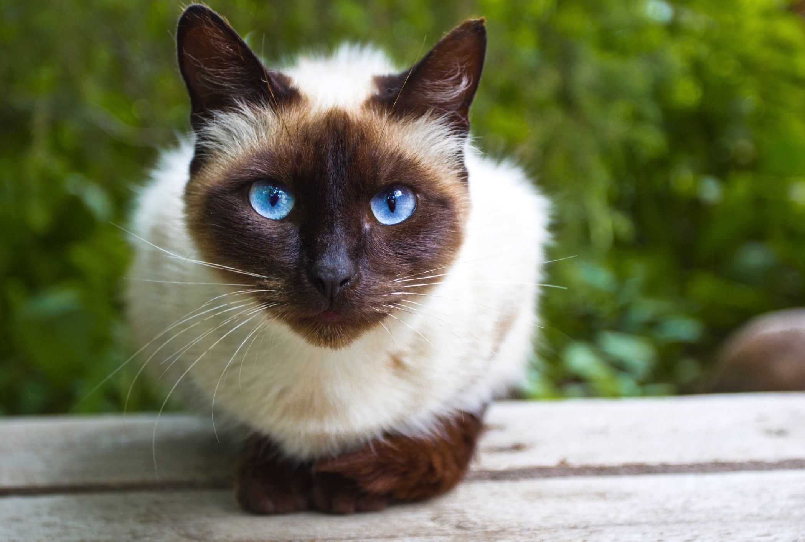

Siamese cats are known for their striking features and affectionate nature. If you’re looking for a constant companion, the Siamese could be a great match for you. These fashionable felines love to play and spend time with their families, and they always have something to say.
Siamese cats originated from Thailand. The breed’s name was actually derived from the word “Siam,” the former name of Thailand. In ancient times, Siamese cats were a favorite of royal families due to their appearance. It was believed that when a member of the royal family died, their Siamese cat would receive their soul. The cat would then spend the rest of their days living luxuriously in a temple with monks and priests as their servants.
Siamese cats were not seen in the U.S. until the late nineteenth century. One of the first known owners of a Siamese cat was First Lady Lucy Hayes, wife of President Rutherford B. Hayes, who was in office from 1877-1881. She received the cat as a gift from a U.S. diplomat working in Thailand.
The Siamese’s crystal-blue eyes are one of their distinct features. The breed is also known for their unusually large, pointy ears, sleek tails and bodies, and color points that may be seen on their face, ears, paws, and tail.
The Siamese is a natural breed, which means their coat pattern was the result of a genetic mutation. The Siamese has four different color variations – seal point, chocolate point, blue point, and lilac point. Many other breeds have come from the Siamese, like the Oriental, the Balinese, the Tonkinese, and the Havana Brown.
A seal point Siamese may have a pale fawn to cream-colored body with seal-brown (dark brown) color points on their face that spread out from their nose, ears, paws, and tail. Their paw pads and nose leather are also dark brown.
Chocolate point Siamese cats have ivory bodies with milk chocolate color points on their nose, ears, paws, and tail. Their nose leather and paw pads are cinnamon-pink.
The blue point Siamese has a bluish-white body with deep-blue points. Their nose and paw pads are slate colored.
This type of Siamese cat has a white body with pinkish-gray points, a cinnamon-pink nose, and cinnamon-pink paw pads to match.
The Siamese is very talkative and craves attention. They love their family so much that they always want a member of the family to be around them. When they don’t get the interaction they desire, they’re known to seem pouty and sad. So, if you’re thinking of getting a Siamese, but are away at work during the day, you might consider getting two. That way, they’ll each have a buddy at all times.
If you’re thinking of getting a Siamese and already have other pets, you probably won’t have to worry about your new furry family member getting along with the others. Siamese cats generally get along well with other cats, dogs, and children, as long as they play nice.